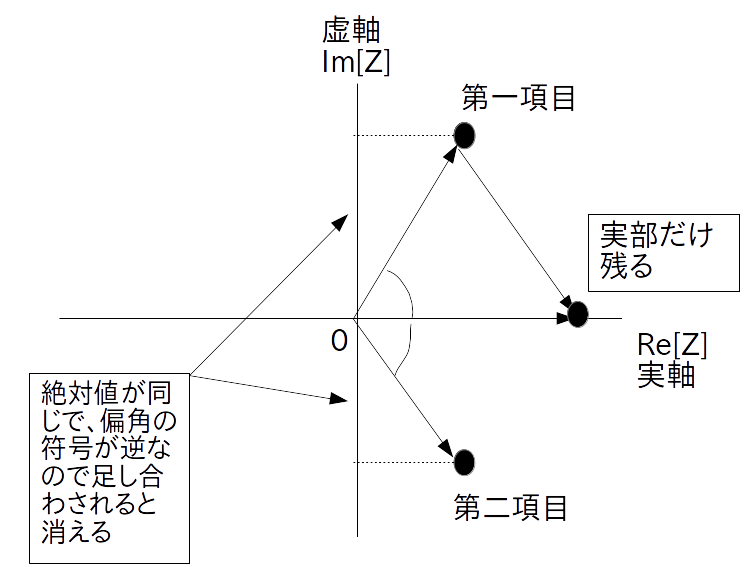

前の学習項目で学んだオイラー公式を使うと、以下のようにアナログサイン波を2つの複素正弦波の和に分解できます。
(サイン波として cos を使う場合)
\[ a \cdot \cos ( w \cdot t + \phi ) = \left \{ \frac{a}{2} \cdot \textrm{e}^{\{-j \cdot \phi \}} \right \} \cdot \textrm{e}^{\{-j \cdot w \cdot t \}} + \left \{ \frac{a}{2} \cdot \textrm{e}^{\{j \cdot \phi \}} \right \} \cdot \textrm{e}^{\{j \cdot w \cdot t \}} \](サイン波として sin を使う場合)
\[ a \cdot \sin ( w \cdot t + \phi ) = \left \{ \frac{a}{2} \cdot \textrm{e}^{\{-j (\phi-\pi/2) \}} \right \} \cdot \textrm{e}^{\{-j \cdot w \cdot t \}} + \left \{ \frac{a}{2} \cdot \textrm{e}^{\{j (\phi-\pi/2) \}} \right \} \cdot \textrm{e}^{\{j \cdot w \cdot t \}} \]$a$・・・アナログサイン波の振幅、実数の定数、範囲は実数全体、単位は扱う信号の種類による(ボルトとかアンペアとか度とかetc.)
$w$ ・・・アナログサイン波の角周波数、実数の定数、範囲は $w \geq 0$、単位は [rad/秒]
$\phi$ (ファイ) ・・・アナログサイン波の初期位相、実数の定数、範囲は $-\pi \leq \phi \leq \pi$、単位は [rad]
$t$ ・・・時刻、実数の変数、単位は[秒]
なお sin 版よりも cos 版の方が少しだけ式が簡単になっていますので、特に断りの無い限り今後はサイン波として cos の方を主に使って話を進めることにします。
ところで複素正弦波どうしを足し合わせると普通のアナログサイン波に変わるのは不思議な感じがします。
しかし式をよく見ると cos 版も sin 版も右辺の第一項目と第二項目の複素正弦波は複素共役関係にあるので、お互いを足すと虚部が消えて実部だけが残ることが分かります(図1)。
